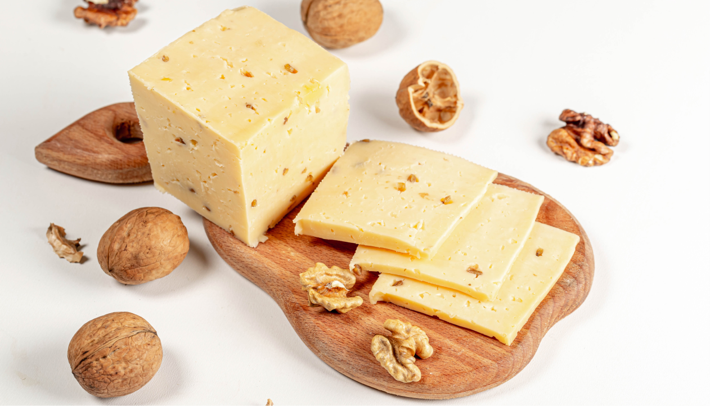

Лайфхаки
Хранение сыра
Правильное хранение продуктов является ключевым аспектом осознанного потребления. Он помогает минимизировать продуктовые отходы и сокращает излишнюю потребность в закупке новых товаров. Сохранение продуктов в соответствии с рекомендациями по температуре, влажности и сроку годности позволяет сохранить их свежесть и качество, избегая преждевременного распада или порчи. Это также способствует эффективному использованию ресурсов и экономии денег, ведь мы используем то, что уже имеем, прежде чем приобретать новое.
Хранение сыра - важный аспект, который влияет на его вкус и качество, поэтому правильное хранение сыра является необходимым условием для сохранения его качества.
Сыр — это один из самых популярных продуктов в мире, который используется в качестве добавки к блюдам или в качестве отдельной закуски. Однако, чтобы сыр сохранял свою свежесть и вкус, необходимо правильно хранить его. В этом кратком руководстве мы расскажем о нескольких важных фактах, которые помогут вам правильно хранить сыр.
 Храните сыр в холодильнике
Храните сыр в холодильникеХолодильник — идеальное место для хранения сыра, так как он предотвращает развитие бактерий и грибков, которые могут испортить продукт. Но важно помнить, что температура в разных частях холодильника разная, поэтому сыр нужно хранить в самой нижней части, где температура самая низкая.
 Оберните сыр в пергаментную бумагу
Оберните сыр в пергаментную бумагуЕсли у вас остался свежий хлеб, который вы не планируете съесть в ближайшее время, его можно заморозить. Для этого следует разрезать хлеб на куски и уложить в пакет для замораживания. Перед употреблением хлеб следует разморозить и подогреть в духовке.
 Не храните разные виды сыров вместе
Не храните разные виды сыров вместеХранение хлеба в холодильнике может привести к потере вкуса, однако, если вы живете в жарком климате или хотите сохранить хлеб на дольший срок, то можно использовать этот метод. Хлеб следует уложить в пакет для хранения, который не допускает воздух.
 Не забывайте про влажность
Не забывайте про влажностьБумажный мешок — это еще один способ хранения хлеба, который позволяет сохранить вкус и свежесть продукта. Мешок следует закрыть и уложить в прохладное место.
 Используйте глиняную посуду
Используйте глиняную посудуЕсли у вас есть возможность, то лучше хранить сыр в глиняной посуде. Глина способна регулировать влажность и температуру, что позволяет сохранять сыр в свежем состоянии.
Не забывайте про срок годности
Срок годности сыра зависит от его вида и способа производства. Некоторые виды сыров могут храниться дольше, но в любом случае не стоит злоупотреблять ими после истечения срока годности.